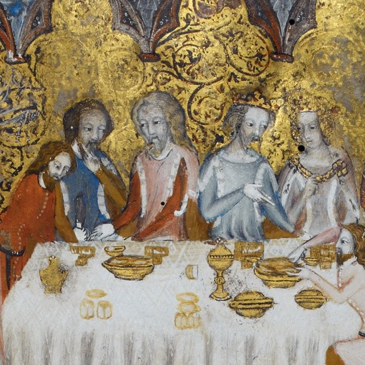
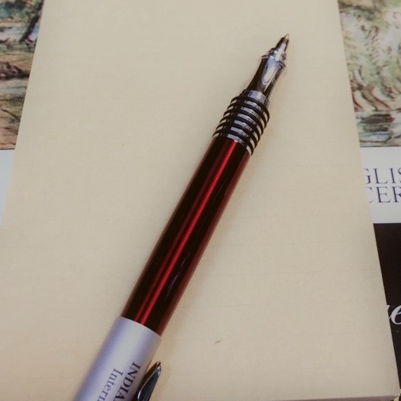

大學部課程
西洋文學概論(一)
This course firstly introduces the Hebrew Bible to explore the ancient Hebrew culture and the relationship between man and God. Then we enter the world of Greek Mythology by reading Homer’s epics: Iliad and Odyssey. Following the Trojan legend, we read Virgil’s Aeneid to explore how the Romans created their national epic based on the story of Troy. Each of these works will be read closely, analyzed carefully, and discussed with its own cultural and historical context.

西洋文學概論(二)
This course firstly introduces the Greek drama to explore theatre of ancient Greece. After discussing Aeschylus’ Agamemnon, Sophocles’ Oedipus the King, Antigone, and Euripides’s Medea, we enter the world of the Greek philosophy by reading Aristotle’s Poetics. Then we read Ovid’s Metamorphoses to explore how the Romans reshaped the Greek mythology. The second part of this course focuses on Christianity. We will discuss the New Testament Gospels and then Augustine’s Confessions. The final part of the course leads us into the world of the Middle Ages. By reading Marie de France’s Lais, we get to know medieval chivalry. Finally, this course ends with Dante Alighieri’s Divine Comedy and Giovanni Boccaccio’s Decameron to see how Dante create a great medieval work by combining great literary traditions before him and how Boccaccio depicts medieval Italy in the dawn of Renaissance.
中世紀英國文學
Placed between the classical tradition and the Renaissance literature, medieval English literature has its own unique beauty and complexity in British literary history. This course is designed to introduce major works in medieval England, approximately from the fifth century to the fifteenth century. This course firstly discusses Old English works, from Bede to Beowulf. Then we read Geoffrey of Monmouth's History of the Kings of Britain, a twelfth-century Latin chronicle, to see the change from Anglo-Saxon England to Anglo-Norman England. After that, we spend some time on Middle English, and read some of the most famous medieval English works, such as Sir Gawain and the Green Knight and Geoffrey Chaucer's The Canterbury Tales. Finally, this course ends with Thomas Malory's Le Morte D'Arthur to explore the Arthurian romances.
英文作文(I)
This course is designed as an INTERACTIVE workshop to help students develop English writing skills. At the end of this course, students should have received practice in writing paragraphs and short essays. They should be able to review, edit and correct their own and others’ work for both content and language. Furthmore, they will be able to write accurately and appropriately on a restricted range of topics and short tasks. Finally, students will have improved the grammatical accuracy of their writing.
英文
The purpose of learning English is to use it! This section of Freshman English is designed as an interactive and student-centered workshop to help students improve their listening, speaking, reading and writing abilities in English. Using resources such as English interviews, news videos, articles, and intriguing TED talks, we will focus on issues in the contemporary world. Students are expected to spend one to two hours a week to prepare for class, probably including reading an article, listening to an interview, or watching a video. In class, “the Topic of the Week” will be explored through group presentations, and we will have different workshops such as Writing workshop, Speech workshop, Pronunciation workshop, News English workshop, and Reading workshop. For the assignments, students will write three paragraphs in this semester and give a 5-minute speech and a group presentation.
研究所課程
喬叟研究
“Geoffrey Chaucer” will introduce students to Chaucer’s literary works and current trends of Chaucerian studies. This course will not only focus on Chaucer’s major poems including The Book of the Duchess, The House of Fame, The Parliament of Fowls, Troilus and Criseyde, The Legend of Good Women, and The Canterbury Tales, but also explore how Chaucer interacted with a wide range of literary sources and traditions, from the Bible through the authors of classical antiquity and down to medieval writers from England and the Continent, especially France and Italy.
中世紀文學：文本與評論
This course will lead students to read interesting Medieval literary works while sampling various recent approaches to Medieval literature and culture. Students can sample different approaches and delve into one more fully in a paper. Texts to be read may include: Geoffrey of Monmouth's Historia regum Britanniae, Layamon's Brut, Chretien de Troyes' Yvain, the Knight of the Lion, The Romance of Sir Beves of Hamtoun, Geoffrey Chaucer's Troilus and Criseyde and "Squire's Tale"", The Book of Margery Kempe, John Lydgate's Troy Book, and Robert Henryson's Testament of Cressida. The topics of critical debates may include: post-colonial medieval historiography, medieval nationalism, medieval creatures and animals, the medieval Orient, gender, sexuality, women, and Troy.